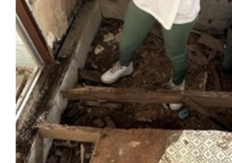
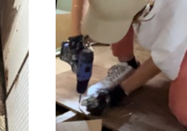

全国15物件でコミュニティによる民泊の立ち上げ及び運営をしている。

ATAMI 1 ／ ATAMI 2 ／ ATAMI 3
YUGAWARA 1
YUGAWARA 1
YAMANAKAKO 1 ／ YAMANAKAKO 2
KAWAGUCHIKO 1
KAWAGUCHIKO 1
KYOTO 1
NASU 1
SHIBUYA 1
KUJUKURI 1 ／ KUJUKURI 2
KUJUKURI 3
KUJUKURI 3
ISHIGAKI 1 ／ KIKAI 1
FANGO.
07 / 10
ファンティズ（FAN T）は長年放置されていた空き家物件の修繕から賃貸運用、物件販売まで手がける事業者
社名
株式会社ファンテイズ
設立
2023年4月6日
代表者
後藤 芽依
所在地
東京都千代田区神田小川町1-8-3 小川町北ビル7F
事業内容
不動産の売買、賃貸借、管理及び仲介など／宅地建物取引業法に基づく宅地建物取引／空き家利活用を目的とした取引およびコンサルティング業務


空家コンサル事業
北海道北見市・士別市・空知郡・函館市／福島県白河市・西郷村・東京都町田市・静岡県焼津市／福岡県北九州市・宮崎県宮崎市 などでも再生を行いました。
自社再生案件
2023年6月〜2024年10月。長年放置された空き家を取得後、再販や賃貸付けを行い、移住者やより良い環境を求める方に入居・活用いただいております。
長野県
岡谷市
埼玉県
川越市
福岡県
福津市／宗像市
北海道
旭川市／芦別市／岩見沢市
小樽市／上川郡／苫前郡
中川郡／美唄市／夕張市
小樽市／上川郡／苫前郡
中川郡／美唄市／夕張市
千葉県
冨里市／松戸市
香川県
坂出市／東かがわ市
高知県
高知市／室戸市
FANGO.
08 / 10